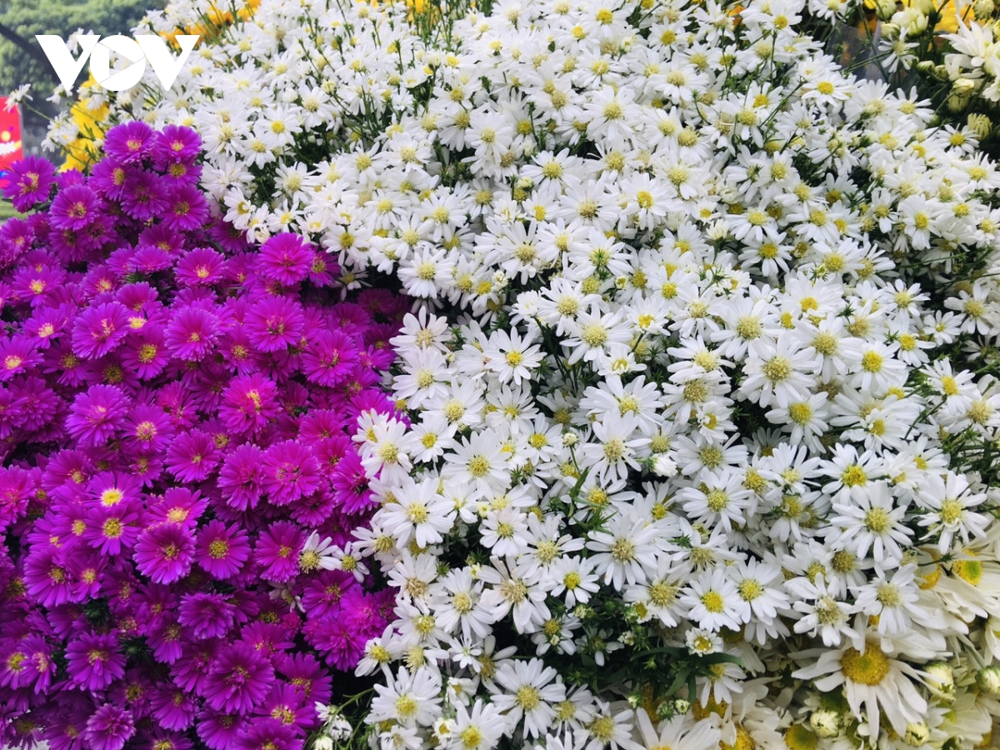
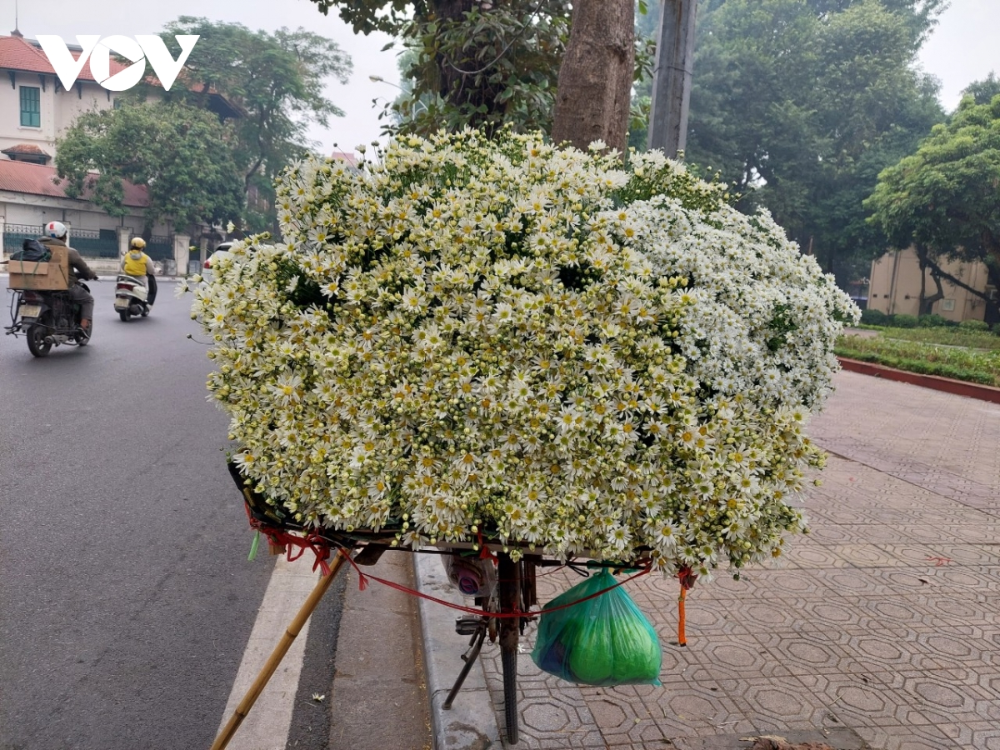
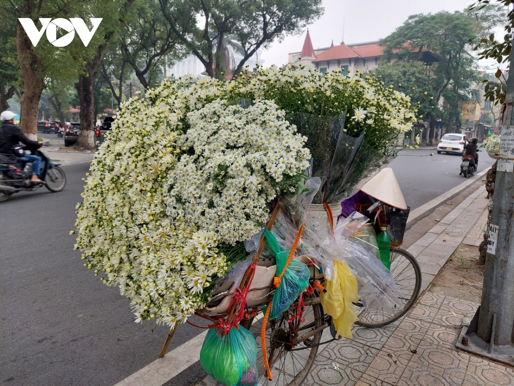

by Hồng béo
Đến hẹn lại lên, vào thời điểm chớm đông, trên nhiều đường phố của Hà Nội như: Phan Đình Phùng, Thụy Khuê, Thanh Niên, lại xuất hiện hình ảnh những chiếc xe chở cúc họa mi trắng tinh khôi.
Hà Nội vốn có nhiều mùa hoa, nhưng hiếm có loài hoa nào mang đến cho người ta nhiều xúc cảm như cúc hoạ mi.
Cúc họa mi có nét đẹp tinh khôi mà giản dị. Đây cũng là một trong những loài hoa đặc trưng của tiết trời chuyển đông miền Bắc nói chung và của Hà Nội nói riêng.
